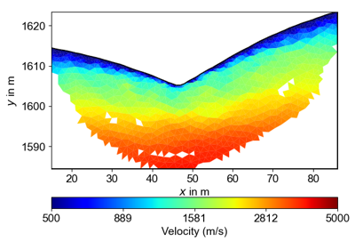
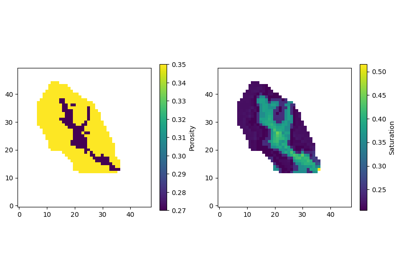
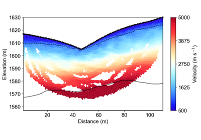
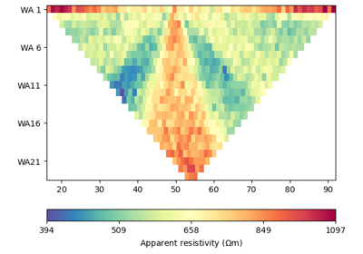
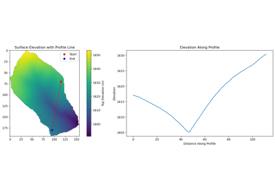

Examples Gallery¶
This gallery contains comprehensive examples demonstrating the capabilities of PyHydroGeophysX for integrating hydrological model outputs with geophysical forward modeling and inversion.
The examples are organized to show the complete workflow from loading hydrological model data to performing geophysical inversions:
Data Processing:
Ex_ERT_data_process.py: Loading, quality control, and exporting field ERT data from commercial instruments (E4D, Syscal, ABEM, etc.) using RESIPY integration
Basic Examples:
Ex_model_output.py: Loading and processing MODFLOW and ParFlow model outputs
Ex_ERT_workflow.py: Workflow for integrating hydrological model outputs with ERT forward modeling and inversion
Time-Lapse Analysis:
Ex_Time_lapse_measurement.py: Creating synthetic time-lapse ERT measurements
Ex_TL_inversion.py: Time-lapse ERT inversion techniques
Ex_structure_TLresinv.py: Structure-constrained time-lapse inversion
Seismic Methods:
EX_SRT_forward.py: Seismic refraction tomography (SRT) forward modeling
EX_SRT_inv.py: Seismic refraction tomography (SRT) inversion and analysis
Advanced Applications:
Ex_Structure_resinv.py: Structure-constrained resistivity inversion
Ex_MC_Hydro.py: Monte Carlo uncertainty quantification for water content estimation
Each example includes detailed comments and demonstrates best practices for watershed geophysical monitoring applications.



Ex. Structure-Constrained Resistivity Inversion

Ex. Loading and Processing Hydrological Model Outputs

Ex. Structure-Constrained Time-Lapse Resistivity Inversion


Ex. Seismic Refraction Tomography (SRT) Inversion and Interface Delineation

Ex. Hydrology to Multi-Geophysics Responses (Single Snapshot, 2D Profile)

Ex. TDEM Workflow: From Hydrological Models to EM Responses and Inversion

Ex. Seismic Refraction Tomography (SRT) Forward Modeling

Ex. Creating Synthetic Time-Lapse ERT Measurements

Ex. ERT Workflow: From Hydrological Models to ERT responses and Inversion

Ex. Monte Carlo Uncertainty Quantification for Hydrologyic Properties Estimation


sphx_glr_auto_examples_app_geophysics_workflow.py